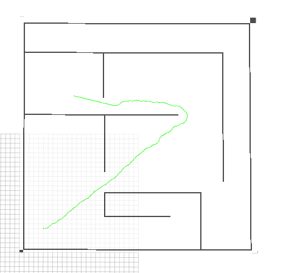
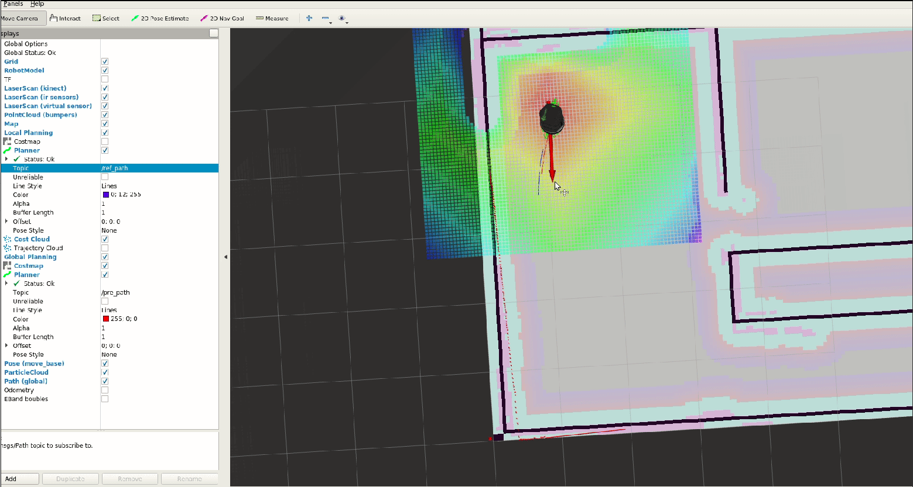

Planning
十二月 02, 2021
1. TEB 开始与结束旋转

2. hybrid a star
在stage中仿真hybrid_a_star, 将其写成global_planner的插件，加入到move_base中 
3. GPS轨迹录制与播放
类比apollo中的GPS轨迹复现功能，读取定位数据，保存为json文件
4. mpc follower
一个用MPC控制小车循迹的功能，网上开源代码 
查看评论